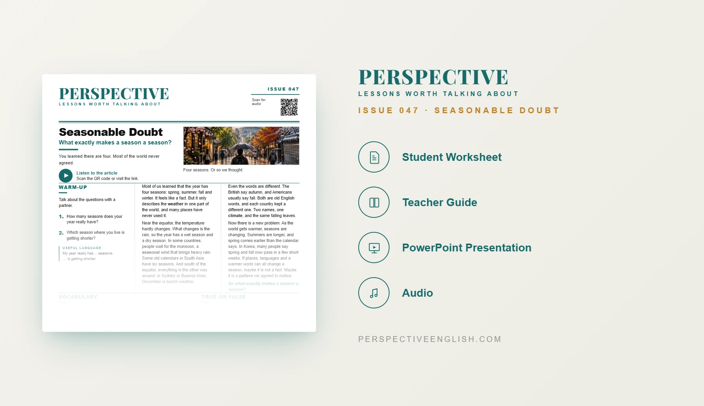

ISSUE 047
Seasonable Doubt ESL Lesson
What exactly makes a season a season?
A ready-to-teach beginner ESL lesson exploring seasons around the world, from spring and fall to wet and dry seasons, monsoon rains and the ways a changing climate affects our calendars.
CHOOSE YOUR LEVEL
Collection 09 includes Issues 046–050.

LESSON PREVIEW

ABOUT THIS LESSON
About This Seasons ESL Lesson
We often learn that every year has four seasons: spring, summer, fall and winter. But that pattern does not describe every place. This A1–A2 lesson introduces different ways people experience and describe the seasons.
Students read and listen to a beginner-friendly article about wet and dry seasons near the equator, monsoon rains, traditional six-season calendars, and the opposite seasons in the Southern Hemisphere. They also learn why British English says autumn and American English often says fall.
Students practice five key words, answer comprehension questions, and discuss how the seasons are changing. In Redraw the Year, groups create three to six new seasons for their country, then present their calendar as an evening weather forecast. The lesson finishes with a guided 60–100 word opinion-writing task.
FROM THE ARTICLE
WHAT'S INCLUDED
What's Included in This Seasonable Doubt ESL Lesson?
- Magazine-style A1–A2 ESL student worksheet
- Original beginner-level reading about seasons around the world, with matching audio
- Five vocabulary words and five true-or-false comprehension questions
- Five supported discussion questions about favorite seasons, changing weather and different calendars
- Redraw the Year critical-thinking task: invent three to six seasons, name them, choose dates and explain why each matters
- Language in Context practice with climate, weather, seasonal, notice and pattern
- Weather-news speaking challenge: announce a new seasonal calendar, explain it and answer a question from the class
- 60–100 word guided opinion-writing task: What exactly makes a season a season?
- Teacher guide, complete answer key and model writing
- Ready-to-use classroom presentation
GET THE COMPLETE LESSON
Ready to Teach Seasonable Doubt?
Get the complete A1–A2 Seasonable Doubt ESL lesson individually, or get Issues 046–050 together in Perspective Collection 09.
Secure checkout and instant digital delivery through Payhip.